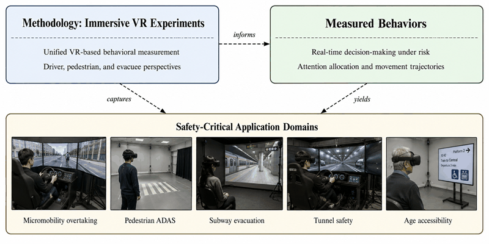
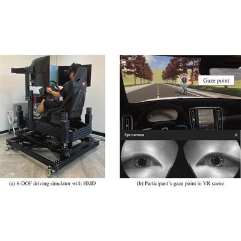
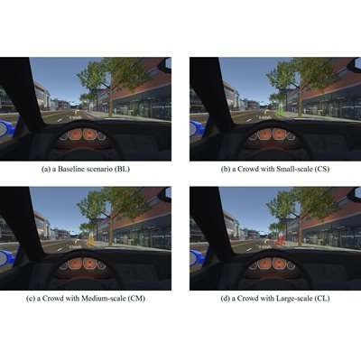
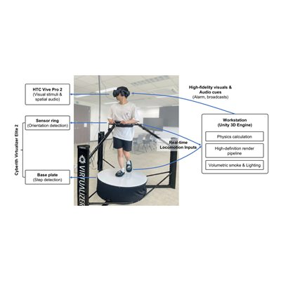
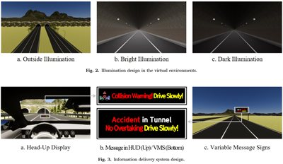
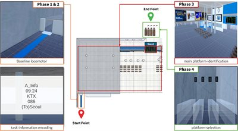

Research
My research sits at the intersection of traffic safety, human factors, and autonomous systems. It covers three topics:
Autonomous vehicle safety evaluation
Adversarial agents trained with reinforcement learning find failures of automated vehicles quickly, but many of the crashes they cause are ones that no driver could have avoided. I develop adversarial agents for testing automated vehicles that create difficult but fair traffic situations: every crash they provoke is one that a careful and competent human driver would have avoided, so each failure points to a weakness of the vehicle rather than to an unavoidable attack.
Fair Adversarial Testing of Automated Vehicles in Highway Cut-ins: Reference-Shielded Attacks and a Capability-Controlled Evaluation
Accident Analysis & Prevention, 2026. (Under review.)
A reinforcement-learning attacker cuts in front of an automated vehicle on a highway, but only with attacks that a careful and competent human driver, modeled after UN Regulation No. 157, could still avoid. It attacks through a shield that replays this reference driver before every action, and a follow-up search tries only attacks that the reference driver avoids with a margin. Each attack is replayed against that reference driver, so a crash counts as a failure of the system under test only when the careful driver avoids the same attack; crashes the careful driver cannot avoid are attributed to the attacker. The attacker starts from cut-ins in the highD drone dataset, and its cut-in motion is checked against real highD cut-ins.

V2X-aware humanoid drivers
My goal is a general-purpose humanoid robot that sits in the driver's seat of an existing car and drives it with the car's own steering wheel and pedals, at road speed and in real traffic, without being wired into the car's electronic controls. Such a robot would automate vehicles already on the road by replacing the driver rather than the vehicle. A driving model built for drive-by-wire cars is not enough for this: the robot steers with its arms, brakes with its feet and sees through a camera on its own head, and at speed the car's motion moves the driver. My Ph.D. research closes this embodiment gap one piece at a time, first in physics simulation of a seated Unitree G1 in a micro electric vehicle, then on the physical robot and a real vehicle.
Steps 1–4 are in simulation (filled dots); steps 5–6 are planned for the physical robot (open dots).
Step 1. Body: how the car moves the driver
When the Car Moves the Driver: Body Loops and the Speed Limit of a Simulated Humanoid Driver
In preparation, 2026.
At road speed, the car's lateral acceleration closes two loops through the robot's body: the inertial load leaks into the steering wheel (biodynamic feedthrough), and the tires' aligning torque turns the wheel against the robot's compliant arms. Three responses of the seated robot, all measurable outside the vehicle, describe these loops. They account for the speed the robot loses against a drive-by-wire car and predict its speed limit before it drives.
Step 2. Eyes: a camera on a swaying head
Seeing from a Swaying Body: Designing Head-Camera Compensation for Humanoid Robot Drivers from Off-Vehicle Tests
In preparation, 2026.
The robot sees the road through a camera on its own body. The car's motion and the robot's own steering sway its torso, so the camera moves and closes a loop through perception that a windshield camera does not have. The paper identifies this camera motion off the vehicle, derives what a compensation must achieve, including the moment its pose estimate must refer to, and predicts the closed-loop speed limit before the robot drives.
Step 3. Brain: what a driving model must know about the body
What an End-to-End Driving Brain Must Know About a Humanoid Body: Closed-Loop Evaluation with an Identified Robot Driver
In preparation, 2026.
Open end-to-end driving models are trained and benchmarked on drive-by-wire vehicles, whose steering follows a command at once. This paper places an identified humanoid body between two open driving models and the vehicle of a closed-loop CARLA benchmark, and asks what the driving model must know about the body, such as its steering-rate limit and how two hands turn a wheel through large angles.
Step 4. Road: what the intersection must tell the robot
Roadside Information, Yellow Intervals and Crossing Capacity for Humanoid Robot Drivers: A Matched-Safety Simulation at an Occluded Intersection
In preparation, 2026.
At an occluded intersection modeled on our C-V2X testbed, planners with camera-only or camera-plus-V2X information drive through simulated humanoid bodies, all tuned to the same safety limits. The paper asks which roadside information such drivers need, how much of their body the planner must know (for example, a slow one-foot move from accelerator to brake), and what this means for yellow intervals and crossing capacity.
Step 5. Real robot: predicting driving limits from bench tests
Bench-to-Road Prediction for a Physical Humanoid Driver (working title)
Planned, 2027.
Measures the body responses of a physical Unitree G1 on a bench and on a six-axis motion platform with a driver's-seat mock-up, and tests whether these measurements predict its driving limits, as they do in simulation. It also measures the pedal control and accelerator-to-brake transitions that the later steps rely on.
Step 6. Real car: a closed track and a V2X intersection
A Humanoid Robot Driving a Real Micro Electric Vehicle on a Closed Track and at a V2X Intersection (working title)
Planned, 2028.
The physical G1 drives a micro electric vehicle with its own steering wheel and pedals, using removable adapters and a safety driver with an auxiliary brake but no connection to the vehicle's electronic controls. It drives first on a closed track, at speeds raised step by step below the limits predicted in step 5, and then at our V2X testbed intersection, where it receives traffic information from the infrastructure.
Human-centric traffic safety research
A long-running line of work using immersive VR experiments to measure how drivers, pedestrians, and evacuees actually decide, attend, and move in safety-critical mobility situations.

Micromobility safety and driver behavior
Drivers share roads with bicycles and e-scooters in increasingly mixed traffic. I study how a driver's own prior riding experience shapes overtaking maneuvers, lateral distance, and risk-taking, using VR-based driving simulators that reproduce realistic urban roadways.

coming'">Micro Mobility Safety Challenges: A Study on Drivers Overtaking Bicycles and E-Scooters according to Road Conditions and Prior Riding Experience
Transportation Research Part F: Traffic Psychology and Behaviour, 2026.
Pedestrian safety and ADAS
How does the way safety information is presented to a driver (a real-time count of crossing pedestrians, or a UWB-based pedestrian tag) change braking behavior, cognitive load, and the safety margins drivers leave under uncertainty? I design and analyze ADAS warning systems with the driver's perception in the loop.

coming'">Effects of Driver's Braking Behavior by the Real-Time Pedestrian Scale Warning System
Accident Analysis & Prevention, vol. 205, 107685, 2024.

Human-Centric Evaluation of UWB-based V2P ADAS: How Pedestrian Tag Adoption Rates Influence Driver Cognitive Load and Safety Performance in School Zones
In preparation, 2026.
Underground and rail safety
Underground and rail environments place people under poor visibility, conflicting cues, and varying perceptual ability. Using VR, I study three settings: how visibility and permissibility signals shape pedestrian evacuation route choice during subway-station fires; how in-tunnel information design affects driver behavior in road tunnels; and how age-related perceptual constraints reshape transport disadvantage in railway information systems.

coming'">From Passive Visibility to Active Permissibility: A Virtual Reality Study on Overcoming Track Avoidance Bias in Subway Station Fires
Underground Space, 2026. (Under review, R1.)

coming'">The Impact of Information Delivery Systems in Tunnels Depending on Lighting Intensity and Speed Limit
Tunnelling and Underground Space Technology, vol. 157, 106365, 2025.

coming'">How Age-Related Constraints Reshape Transport Disadvantage in Dynamic Railway Information Systems: Evidence from Virtual Aging Simulation
Journal of Urban Mobility, vol. 10, 100292, 2026.